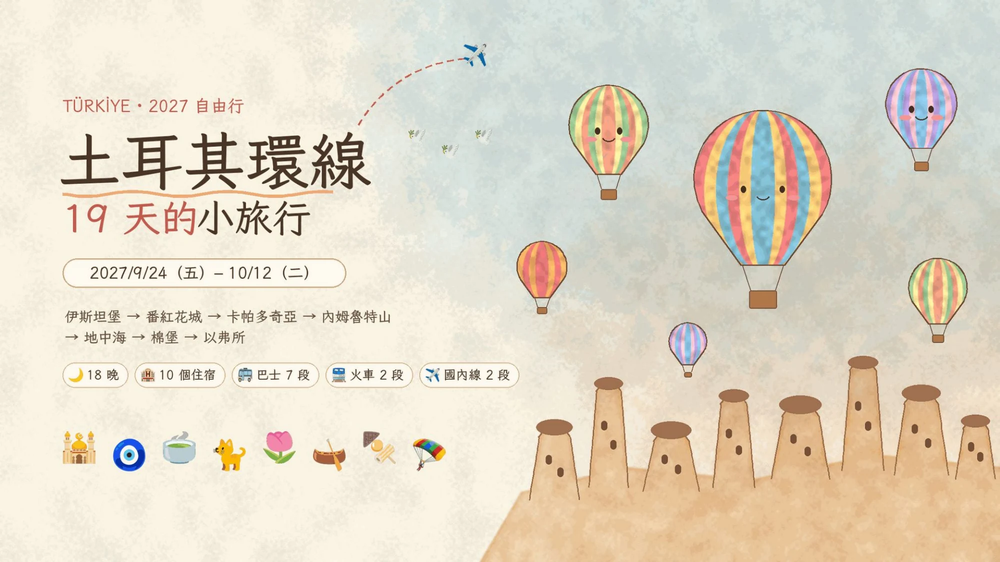
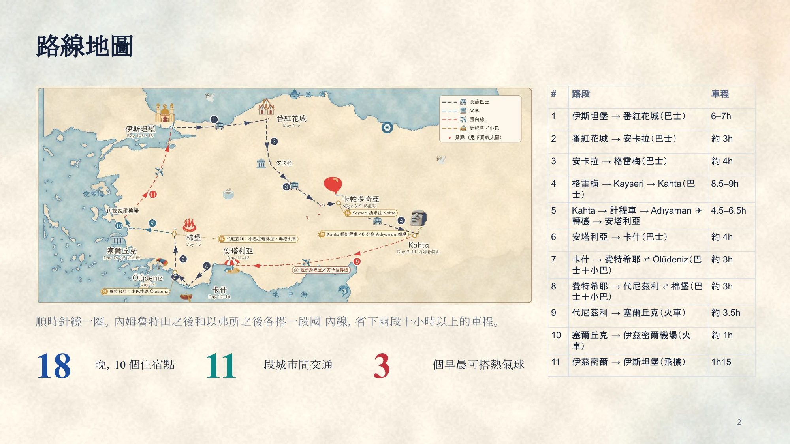
閱讀文字與參考連結
路線地圖
順時針繞一圈。內姆魯特山之後和以弗所之後各搭一段國內線，省下兩段十小時以上的車程。
18
晚，10 個住宿點
11
段城市間交通
3
個早晨可搭熱氣球
#
路段
車程
1
伊斯坦堡 → 番紅花城（巴士）
6–7h
2
番紅花城 → 安卡拉（巴士）
約 3h
3
安卡拉 → 格雷梅（巴士）
約 4h
4
格雷梅 → Kayseri → Kahta（巴士）
8.5–9h
5
Kahta → 計程車 → Adıyaman ✈ 轉機 → 安塔利亞
4.5–6.5h
6
安塔利亞 → 卡什（巴士）
約 4h
7
卡什 → 費特希耶 ⇄ Ölüdeniz（巴士＋小巴）
約 3h
8
費特希耶 → 代尼茲利 ⇄ 棉堡（巴士＋小巴）
約 3h
9
代尼茲利 → 塞爾丘克（火車）
約 3.5h
10
塞爾丘克 → 伊茲密爾機場（火車）
約 1h
11
伊茲密爾 → 伊斯坦堡（飛機）
1h15
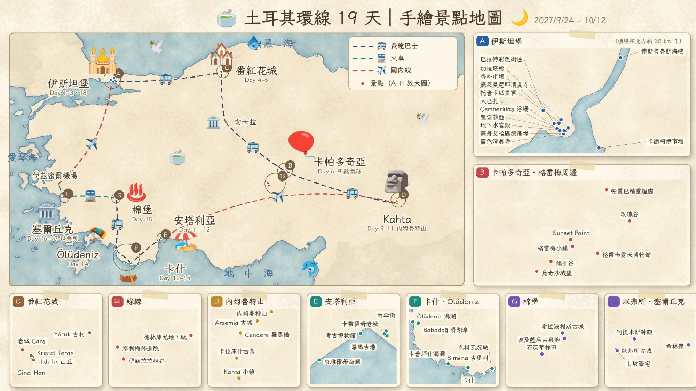
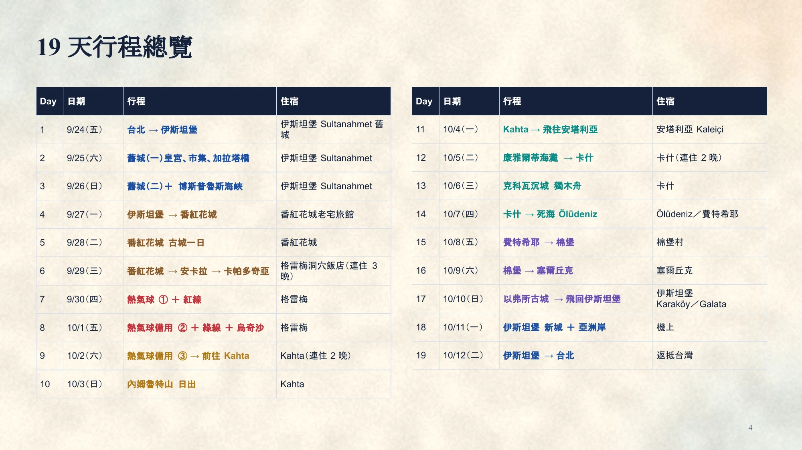
閱讀文字與參考連結
19 天行程總覽
Day
日期
行程
住宿
1
9/24（五）
台北 → 伊斯坦堡
伊斯坦堡 Sultanahmet 舊城
2
9/25（六）
舊城（一）皇宮、市集、加拉塔橋
伊斯坦堡 Sultanahmet
3
9/26（日）
舊城（二）＋ 博斯普魯斯海峽
伊斯坦堡 Sultanahmet
4
9/27（一）
伊斯坦堡 → 番紅花城
番紅花城老宅旅館
5
9/28（二）
番紅花城 古城一日
番紅花城
6
9/29（三）
番紅花城 → 安卡拉 → 卡帕多奇亞
格雷梅洞穴飯店（連住 3 晚）
7
9/30（四）
熱氣球 ① ＋ 紅線
格雷梅
8
10/1（五）
熱氣球備用 ② ＋ 綠線 ＋ 烏奇沙
格雷梅
9
10/2（六）
熱氣球備用 ③ → 前往 Kahta
Kahta（連住 2 晚）
10
10/3（日）
內姆魯特山 日出
Kahta
Day
日期
行程
住宿
11
10/4（一）
Kahta → 飛往安塔利亞
安塔利亞 Kaleiçi
12
10/5（二）
康雅爾蒂海灘 → 卡什
卡什（連住 2 晚）
13
10/6（三）
克科瓦沉城 獨木舟
卡什
14
10/7（四）
卡什 → 死海 Ölüdeniz
Ölüdeniz／費特希耶
15
10/8（五）
費特希耶 → 棉堡
棉堡村
16
10/9（六）
棉堡 → 塞爾丘克
塞爾丘克
17
10/10（日）
以弗所古城 → 飛回伊斯坦堡
伊斯坦堡 Karaköy／Galata
18
10/11（一）
伊斯坦堡 新城 ＋ 亞洲岸
機上
19
10/12（二）
伊斯坦堡 → 台北
返抵台灣
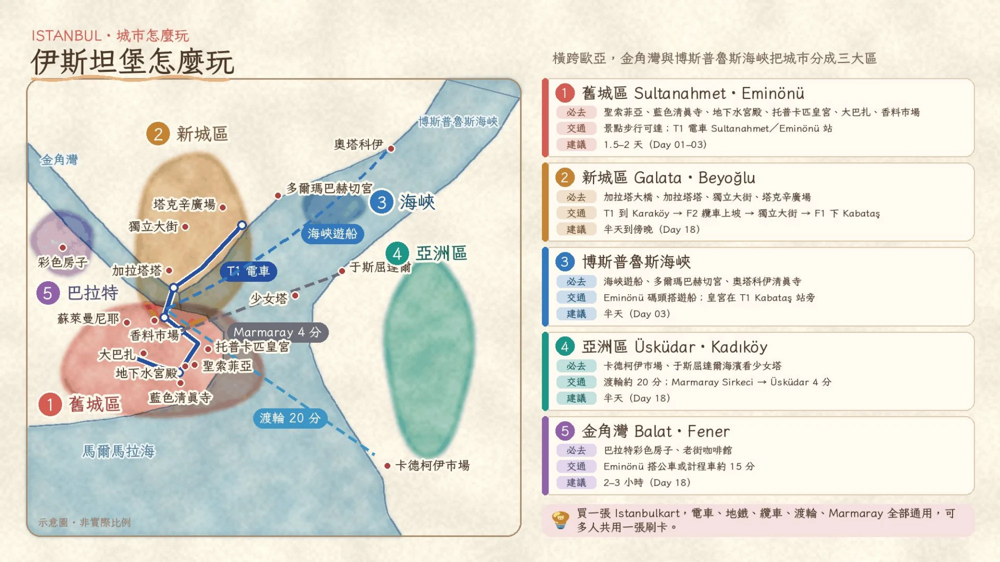
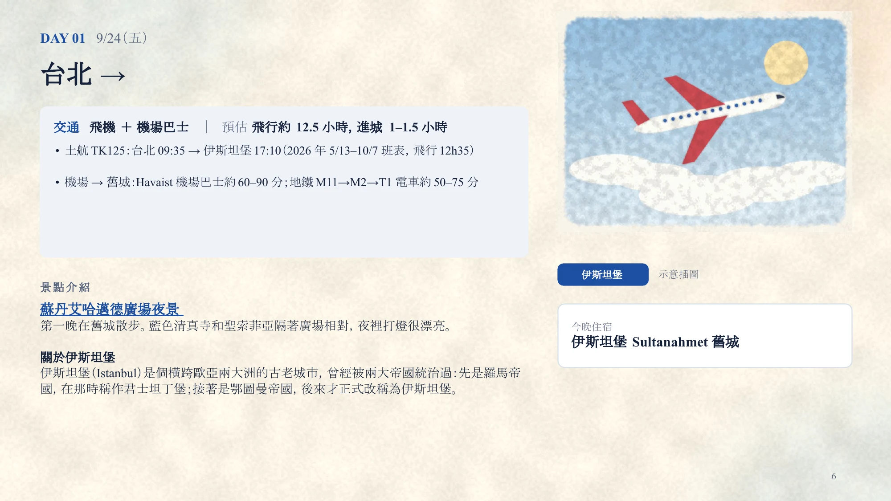
閱讀文字與參考連結
DAY 01 9/24（五）
台北 →
交通 飛機 ＋ 機場巴士 ｜ 預估 飛行約 12.5 小時，進城 1–1.5 小時
土航 TK125：台北 09:35 → 伊斯坦堡 17:10（2026 年 5/13–10/7 班表，飛行 12h35）
機場 → 舊城：Havaist 機場巴士約 60–90 分；地鐵 M11→M2→T1 電車約 50–75 分
景點介紹
蘇丹艾哈邁德廣場夜景
第一晚在舊城散步。藍色清真寺和聖索菲亞隔著廣場相對，夜裡打燈很漂亮。
關於伊斯坦堡
伊斯坦堡（Istanbul）是個橫跨歐亞兩大洲的古老城市，曾經被兩大帝國統治過：先是羅馬帝國，在那時稱作君士坦丁堡；接著是鄂圖曼帝國，後來才正式改稱為伊斯坦堡。
伊斯坦堡
示意插圖
今晚住宿
伊斯坦堡 Sultanahmet 舊城
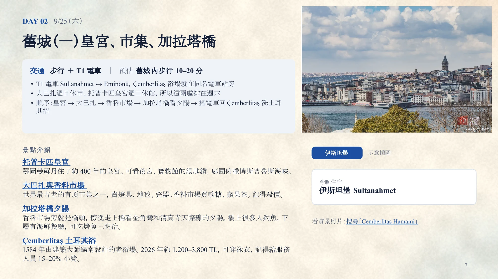
閱讀文字與參考連結
DAY 02 9/25（六）
舊城（一）皇宮、市集、加拉塔橋
交通 步行 ＋ T1 電車 ｜ 預估 舊城內步行 10–20 分
T1 電車 Sultanahmet ↔ Eminönü，Çemberlitaş 浴場就在同名電車站旁
大巴扎週日休市、托普卡匹皇宮週二休館，所以這兩處排在週六
順序：皇宮 → 大巴扎 → 香料市場 → 加拉塔橋看夕陽 → 搭電車回 Çemberlitaş 洗土耳其浴
景點介紹
托普卡匹皇宮
鄂圖曼蘇丹住了約 400 年的皇宮。可看後宮、寶物館的湯匙鑽，庭園俯瞰博斯普魯斯海峽。
大巴扎與香料市場
世界最古老的有頂市集之一，賣燈具、地毯、瓷器；香料市場買軟糖、蘋果茶。記得殺價。
加拉塔橋夕陽
香料市場旁就是橋頭，傍晚走上橋看金角灣和清真寺天際線的夕陽。橋上很多人釣魚，下層有海鮮餐廳，可吃烤魚三明治。
Çemberlitaş 土耳其浴
1584 年由建築大師錫南設計的老浴場。2026 年約 1,200–3,800 TL，可穿泳衣，記得給服務人員 15–20% 小費。
伊斯坦堡
示意插圖
今晚住宿
伊斯坦堡 Sultanahmet
看實景照片：搜尋「Cemberlitas Hamami」
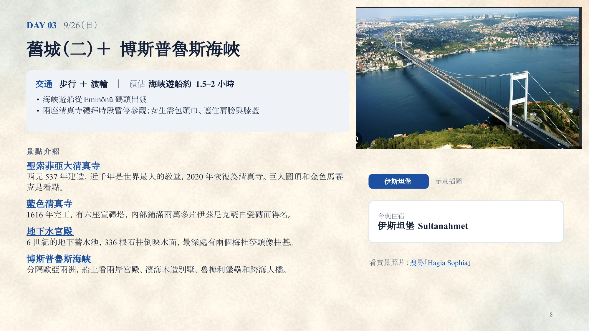
閱讀文字與參考連結
DAY 03 9/26（日）
舊城（二）＋ 博斯普魯斯海峽
交通 步行 ＋ 渡輪 ｜ 預估 海峽遊船約 1.5–2 小時
海峽遊船從 Eminönü 碼頭出發
兩座清真寺禮拜時段暫停參觀；女生需包頭巾、遮住肩膀與膝蓋
景點介紹
聖索菲亞大清真寺
西元 537 年建造，近千年是世界最大的教堂，2020 年恢復為清真寺。巨大圓頂和金色馬賽克是看點。
藍色清真寺
1616 年完工，有六座宣禮塔，內部鋪滿兩萬多片伊茲尼克藍白瓷磚而得名。
地下水宮殿
6 世紀的地下蓄水池，336 根石柱倒映水面，最深處有兩個梅杜莎頭像柱基。
博斯普魯斯海峽
分隔歐亞兩洲，船上看兩岸宮殿、濱海木造別墅、魯梅利堡壘和跨海大橋。
伊斯坦堡
示意插圖
今晚住宿
伊斯坦堡 Sultanahmet
看實景照片：搜尋「Hagia Sophia」
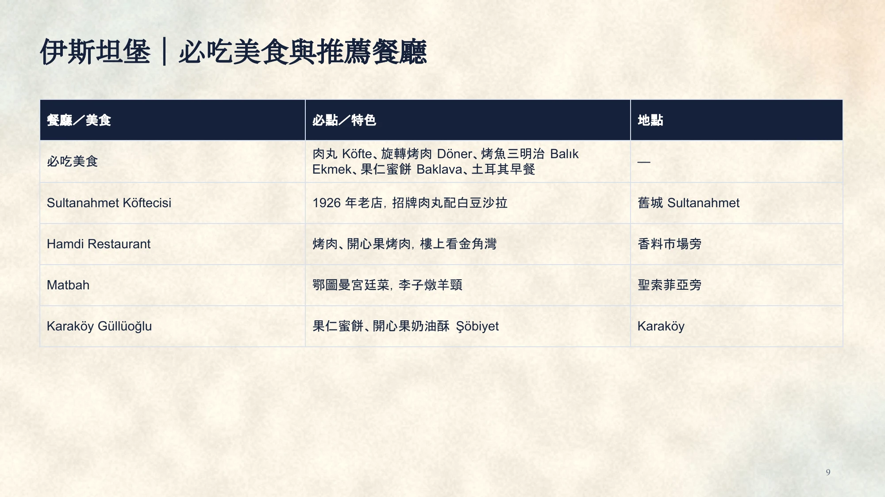
閱讀文字與參考連結
餐廳／美食
必點／特色
地點
必吃美食
肉丸 Köfte、旋轉烤肉 Döner、烤魚三明治 Balık Ekmek、果仁蜜餅 Baklava、土耳其早餐
—
Sultanahmet Köftecisi
1926 年老店，招牌肉丸配白豆沙拉
舊城 Sultanahmet
Hamdi Restaurant
烤肉、開心果烤肉，樓上看金角灣
香料市場旁
Matbah
鄂圖曼宮廷菜，李子燉羊頸
聖索菲亞旁
Karaköy Güllüoğlu
果仁蜜餅、開心果奶油酥 Şöbiyet
Karaköy
伊斯坦堡｜必吃美食與推薦餐廳
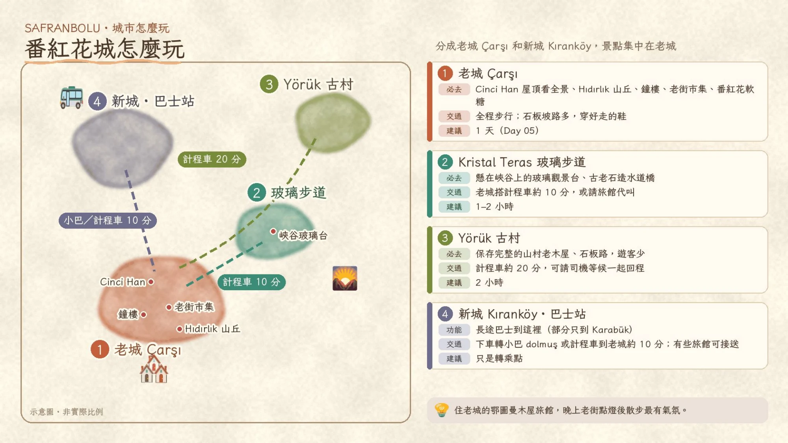
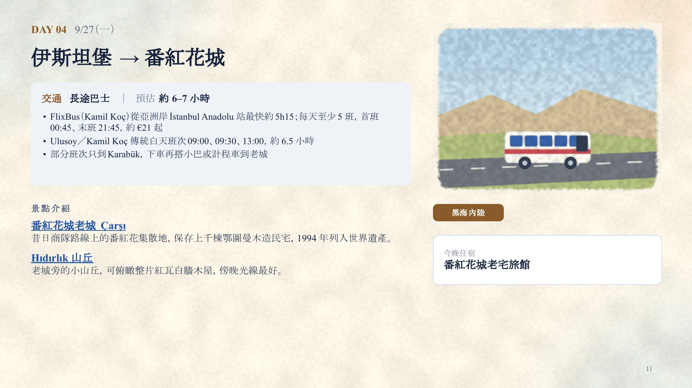
閱讀文字與參考連結
DAY 04 9/27（一）
伊斯坦堡 → 番紅花城
交通 長途巴士 ｜ 預估 約 6–7 小時
FlixBus（Kamil Koç）從亞洲岸 İstanbul Anadolu 站最快約 5h15；每天至少 5 班，首班 00:45、末班 21:45，約 €21 起
Ulusoy／Kamil Koç 傳統白天班次 09:00、09:30、13:00，約 6.5 小時
部分班次只到 Karabük，下車再搭小巴或計程車到老城
景點介紹
番紅花城老城 Çarşı
昔日商隊路線上的番紅花集散地，保存上千棟鄂圖曼木造民宅，1994 年列入世界遺產。
Hıdırlık 山丘
老城旁的小山丘，可俯瞰整片紅瓦白牆木屋，傍晚光線最好。
黑海內陸
今晚住宿
番紅花城老宅旅館
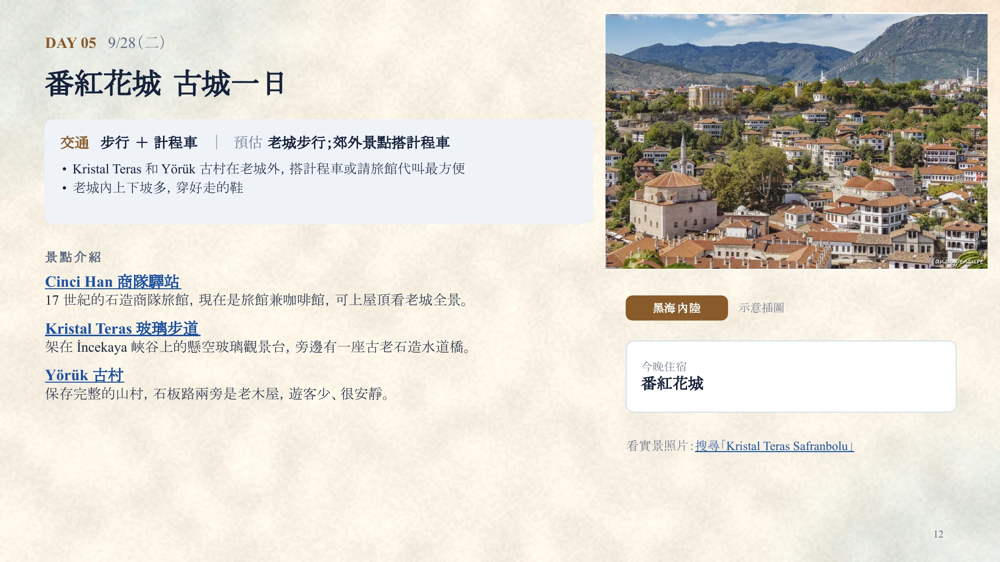
閱讀文字與參考連結
DAY 05 9/28（二）
番紅花城 古城一日
交通 步行 ＋ 計程車 ｜ 預估 老城步行；郊外景點搭計程車
Kristal Teras 和 Yörük 古村在老城外，搭計程車或請旅館代叫最方便
老城內上下坡多，穿好走的鞋
景點介紹
Cinci Han 商隊驛站
17 世紀的石造商隊旅館，現在是旅館兼咖啡館，可上屋頂看老城全景。
Kristal Teras 玻璃步道
架在 İncekaya 峽谷上的懸空玻璃觀景台，旁邊有一座古老石造水道橋。
Yörük 古村
保存完整的山村，石板路兩旁是老木屋，遊客少、很安靜。
黑海內陸
示意插圖
今晚住宿
番紅花城
看實景照片：搜尋「Kristal Teras Safranbolu」
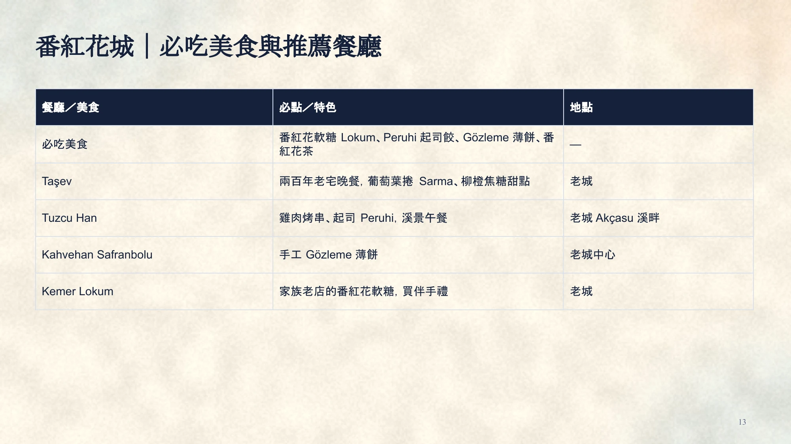
閱讀文字與參考連結
餐廳／美食
必點／特色
地點
必吃美食
番紅花軟糖 Lokum、Peruhi 起司餃、Gözleme 薄餅、番紅花茶
—
Taşev
兩百年老宅晚餐，葡萄葉捲 Sarma、柳橙焦糖甜點
老城
Tuzcu Han
雞肉烤串、起司 Peruhi，溪景午餐
老城 Akçasu 溪畔
Kahvehan Safranbolu
手工 Gözleme 薄餅
老城中心
Kemer Lokum
家族老店的番紅花軟糖，買伴手禮
老城
番紅花城｜必吃美食與推薦餐廳
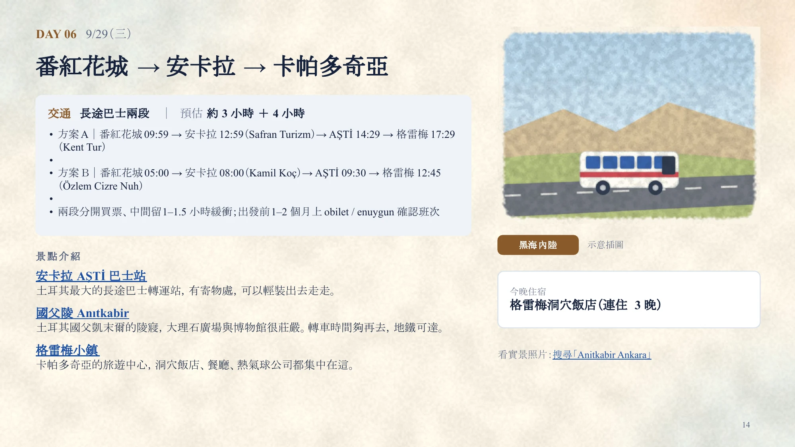
閱讀文字與參考連結
DAY 06 9/29（三）
番紅花城 → 安卡拉 → 卡帕多奇亞
交通 長途巴士兩段 ｜ 預估 約 3 小時 ＋ 4 小時
方案 A｜番紅花城 09:59 → 安卡拉 12:59（Safran Turizm）→ AŞTİ 14:29 → 格雷梅 17:29（Kent Tur）
方案 Ｂ｜番紅花城 05:00 → 安卡拉 08:00（Kamil Koç）→ AŞTİ 09:30 → 格雷梅 12:45（Özlem Cizre Nuh）
兩段分開買票、中間留 1–1.5 小時緩衝；出發前 1–2 個月上 obilet / enuygun 確認班次
景點介紹
安卡拉 AŞTİ 巴士站
土耳其最大的長途巴士轉運站，有寄物處，可以輕裝出去走走。
國父陵 Anıtkabir
土耳其國父凱末爾的陵寢，大理石廣場與博物館很莊嚴。轉車時間夠再去，地鐵可達。
格雷梅小鎮
卡帕多奇亞的旅遊中心，洞穴飯店、餐廳、熱氣球公司都集中在這。
黑海內陸
示意插圖
今晚住宿
格雷梅洞穴飯店（連住 3 晚）
看實景照片：搜尋「Anitkabir Ankara」
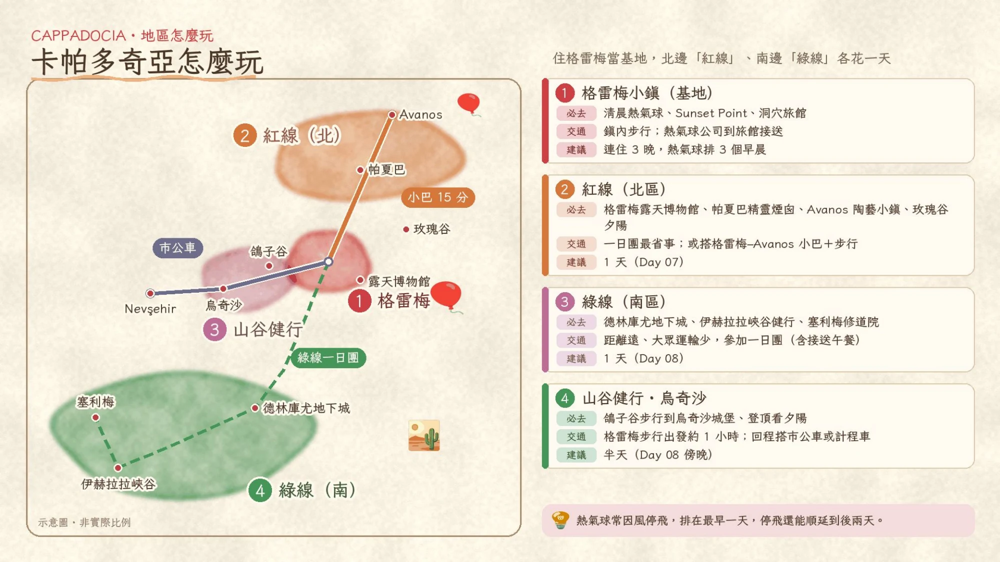
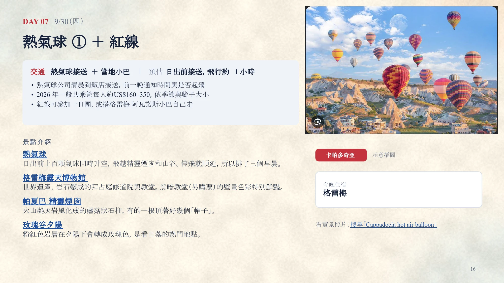
閱讀文字與參考連結
DAY 07 9/30（四）
熱氣球 ① ＋ 紅線
交通 熱氣球接送 ＋ 當地小巴 ｜ 預估 日出前接送，飛行約 1 小時
熱氣球公司清晨到飯店接送，前一晚通知時間與是否起飛
2026 年一般共乘籃每人約 US$160–350，依季節與籃子大小
紅線可參加一日團，或搭格雷梅–阿瓦諾斯小巴自己走
景點介紹
熱氣球
日出前上百顆氣球同時升空，飛越精靈煙囪和山谷。停飛就順延，所以排了三個早晨。
格雷梅露天博物館
世界遺產，岩石鑿成的拜占庭修道院與教堂。黑暗教堂（另購票）的壁畫色彩特別鮮豔。
帕夏巴 精靈煙囪
火山凝灰岩風化成的蘑菇狀石柱，有的一根頂著好幾個「帽子」。
玫瑰谷夕陽
粉紅色岩層在夕陽下會轉成玫瑰色，是看日落的熱門地點。
卡帕多奇亞
示意插圖
今晚住宿
格雷梅
看實景照片：搜尋「Cappadocia hot air balloon」
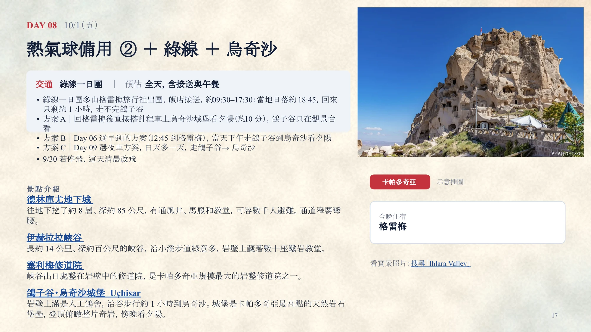
閱讀文字與參考連結
DAY 08 10/1（五）
熱氣球備用 ② ＋ 綠線 ＋ 烏奇沙
交通 綠線一日團 ｜ 預估 全天，含接送與午餐
綠線一日團多由格雷梅旅行社出團，飯店接送，約 09:30–17:30；當地日落約 18:45，回來只剩約 1 小時，走不完鴿子谷
方案 A｜回格雷梅後直接搭計程車上烏奇沙城堡看夕陽（約 10 分），鴿子谷只在觀景台看
方案 B｜Day 06 選早到的方案（12:45 到格雷梅），當天下午走鴿子谷到烏奇沙看夕陽
方案 C｜Day 09 選夜車方案，白天多一天，走鴿子谷 → 烏奇沙
9/30 若停飛，這天清晨改飛
景點介紹
德林庫尤地下城
往地下挖了約 8 層、深約 85 公尺，有通風井、馬廄和教堂，可容數千人避難。通道窄要彎腰。
伊赫拉拉峽谷
長約 14 公里、深約百公尺的峽谷，沿小溪步道綠意多，岩壁上藏著數十座鑿岩教堂。
塞利梅修道院
峽谷出口處鑿在岩壁中的修道院，是卡帕多奇亞規模最大的岩鑿修道院之一。
鴿子谷・烏奇沙城堡 Uçhisar
岩壁上滿是人工鴿舍，沿谷步行約 1 小時到烏奇沙。城堡是卡帕多奇亞最高點的天然岩石堡壘，登頂俯瞰整片奇岩，傍晚看夕陽。
卡帕多奇亞
示意插圖
今晚住宿
格雷梅
看實景照片：搜尋「Ihlara Valley」
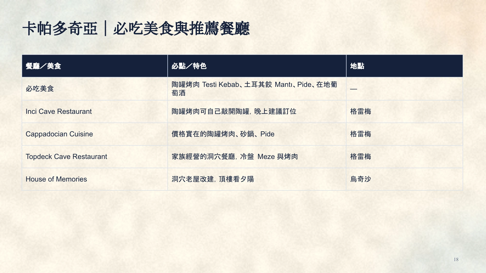
閱讀文字與參考連結
餐廳／美食
必點／特色
地點
必吃美食
陶罐烤肉 Testi Kebab、土耳其餃 Mantı、Pide、在地葡萄酒
—
Inci Cave Restaurant
陶罐烤肉可自己敲開陶罐，晚上建議訂位
格雷梅
Cappadocian Cuisine
價格實在的陶罐烤肉、砂鍋、Pide
格雷梅
Topdeck Cave Restaurant
家族經營的洞穴餐廳，冷盤 Meze 與烤肉
格雷梅
House of Memories
洞穴老屋改建，頂樓看夕陽
烏奇沙
卡帕多奇亞｜必吃美食與推薦餐廳
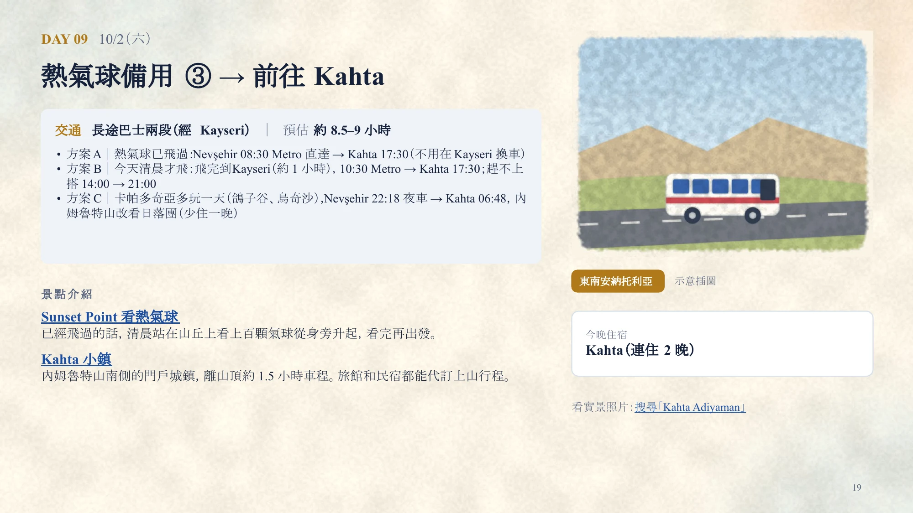
閱讀文字與參考連結
DAY 09 10/2（六）
熱氣球備用 ③ → 前往 Kahta
交通 長途巴士兩段（經 Kayseri） ｜ 預估 約 8.5–9 小時
方案 A｜熱氣球已飛過：Nevşehir 08:30 Metro 直達 → Kahta 17:30（不用在 Kayseri 換車）
方案 B｜今天清晨才飛：飛完到 Kayseri（約 1 小時），10:30 Metro → Kahta 17:30；趕不上搭 14:00 → 21:00
方案 C｜卡帕多奇亞多玩一天（鴿子谷、烏奇沙），Nevşehir 22:18 夜車 → Kahta 06:48，內姆魯特山改看日落團（少住一晚）
景點介紹
Sunset Point 看熱氣球
已經飛過的話，清晨站在山丘上看上百顆氣球從身旁升起，看完再出發。
Kahta 小鎮
內姆魯特山南側的門戶城鎮，離山頂約 1.5 小時車程。旅館和民宿都能代訂上山行程。
東南安納托利亞
示意插圖
今晚住宿
Kahta（連住 2 晚）
看實景照片：搜尋「Kahta Adiyaman」
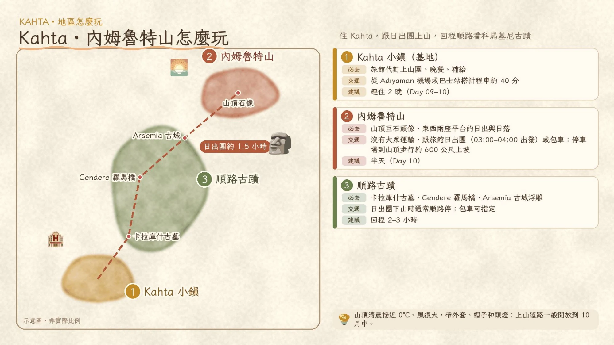
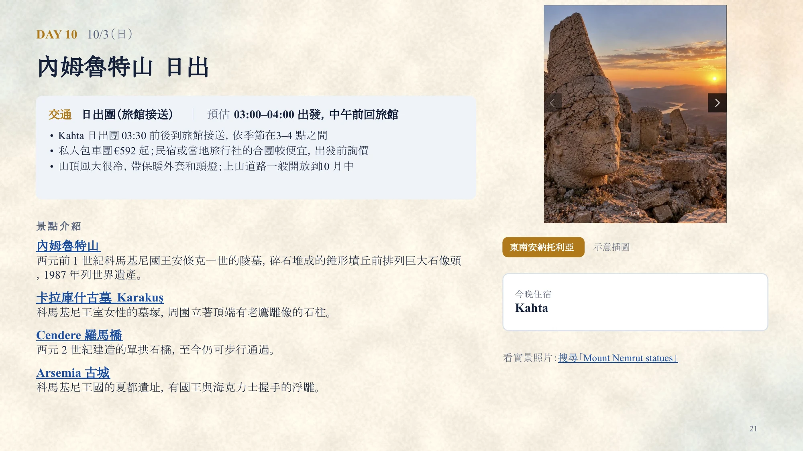
閱讀文字與參考連結
DAY 10 10/3（日）
內姆魯特山 日出
交通 日出團（旅館接送） ｜ 預估 03:00–04:00 出發，中午前回旅館
Kahta 日出團 03:30 前後到旅館接送，依季節在 3–4 點之間
私人包車團 €592 起；民宿或當地旅行社的合團較便宜，出發前詢價
山頂風大很冷，帶保暖外套和頭燈；上山道路一般開放到 10 月中
景點介紹
內姆魯特山
西元前 1 世紀科馬基尼國王安條克一世的陵墓，碎石堆成的錐形墳丘前排列巨大石像頭，1987 年列世界遺產。
卡拉庫什古墓 Karakuş
科馬基尼王室女性的墓塚，周圍立著頂端有老鷹雕像的石柱。
Cendere 羅馬橋
西元 2 世紀建造的單拱石橋，至今仍可步行通過。
Arsemia 古城
科馬基尼王國的夏都遺址，有國王與海克力士握手的浮雕。
東南安納托利亞
示意插圖
今晚住宿
Kahta
看實景照片：搜尋「Mount Nemrut statues」
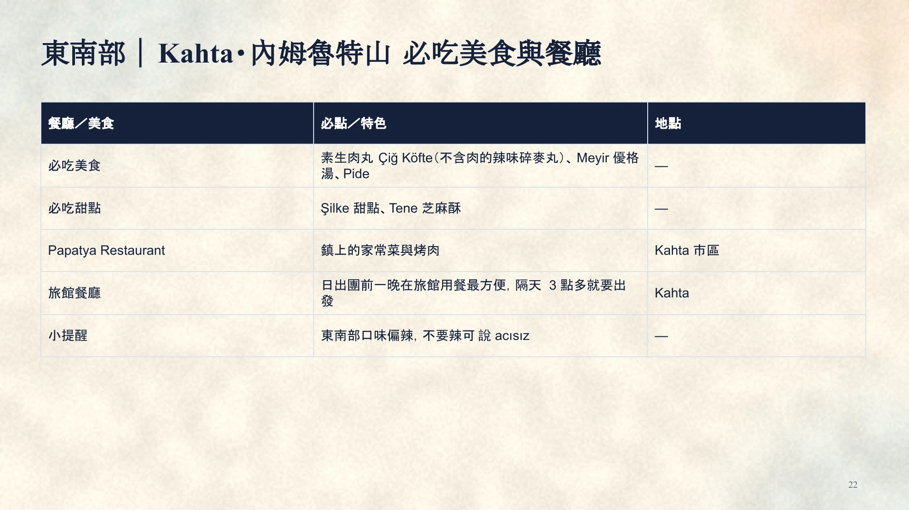
閱讀文字與參考連結
餐廳／美食
必點／特色
地點
必吃美食
素生肉丸 Çiğ Köfte（不含肉的辣味碎麥丸）、Meyir 優格湯、Pide
—
必吃甜點
Şilke 甜點、Tene 芝麻酥
—
Papatya Restaurant
鎮上的家常菜與烤肉
Kahta 市區
旅館餐廳
日出團前一晚在旅館用餐最方便，隔天 3 點多就要出發
Kahta
小提醒
東南部口味偏辣，不要辣可說 acısız
—
東南部｜Kahta・內姆魯特山 必吃美食與餐廳
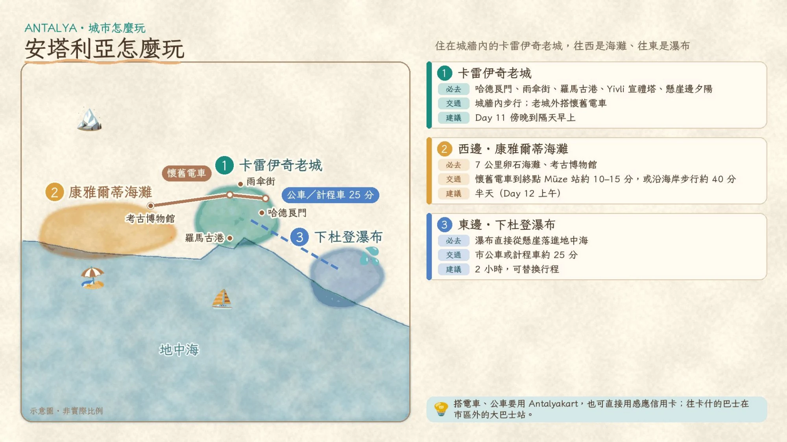
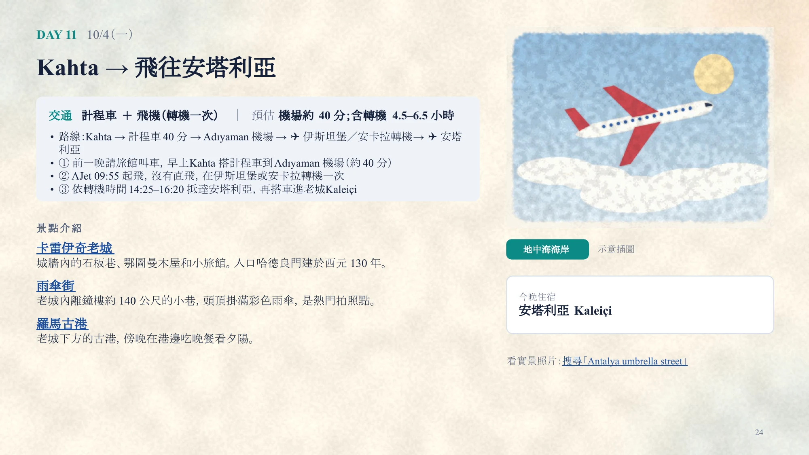
閱讀文字與參考連結
DAY 11 10/4（一）
Kahta → 飛往安塔利亞
交通 計程車 ＋ 飛機（轉機一次） ｜ 預估 機場約 40 分；含轉機 4.5–6.5 小時
路線：Kahta → 計程車 40 分 → Adıyaman 機場 → ✈ 伊斯坦堡／安卡拉轉機 → ✈ 安塔利亞
① 前一晚請旅館叫車，早上 Kahta 搭計程車到 Adıyaman 機場（約 40 分）
② AJet 09:55 起飛，沒有直飛，在伊斯坦堡或安卡拉轉機一次
③ 依轉機時間 14:25–16:20 抵達安塔利亞，再搭車進老城 Kaleiçi
景點介紹
卡雷伊奇老城
城牆內的石板巷、鄂圖曼木屋和小旅館。入口哈德良門建於西元 130 年。
雨傘街
老城內離鐘樓約 140 公尺的小巷，頭頂掛滿彩色雨傘，是熱門拍照點。
羅馬古港
老城下方的古港，傍晚在港邊吃晚餐看夕陽。
地中海海岸
示意插圖
今晚住宿
安塔利亞 Kaleiçi
看實景照片：搜尋「Antalya umbrella street」
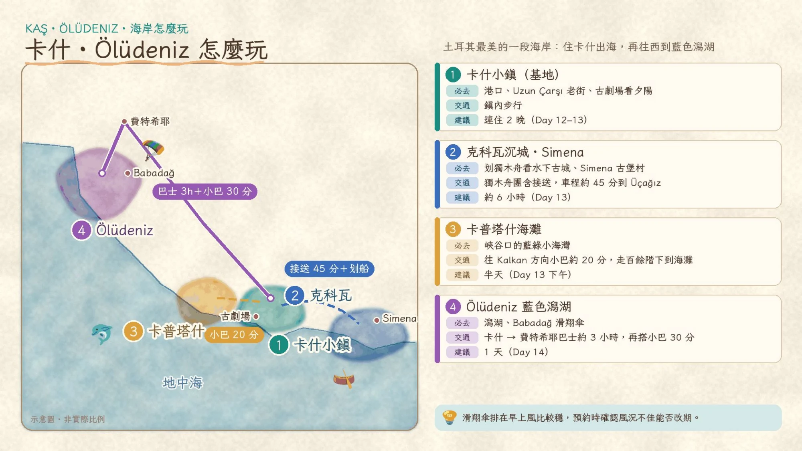
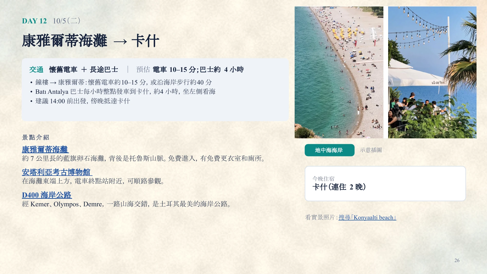
閱讀文字與參考連結
DAY 12 10/5（二）
康雅爾蒂海灘 → 卡什
交通 懷舊電車 ＋ 長途巴士 ｜ 預估 電車 10–15 分；巴士約 4 小時
鐘樓 → 康雅爾蒂：懷舊電車約 10–15 分，或沿海岸步行約 40 分
Batı Antalya 巴士每小時整點發車到卡什，約 4 小時，坐左側看海
建議 14:00 前出發，傍晚抵達卡什
景點介紹
康雅爾蒂海灘
約 7 公里長的藍旗卵石海灘，背後是托魯斯山脈。免費進入，有免費更衣室和廁所。
安塔利亞考古博物館
在海灘東端上方，電車終點站附近，可順路參觀。
D400 海岸公路
經 Kemer、Olympos、Demre，一路山海交錯，是土耳其最美的海岸公路。
地中海海岸
示意插圖
今晚住宿
卡什（連住 2 晚）
看實景照片：搜尋「Konyaalti beach」
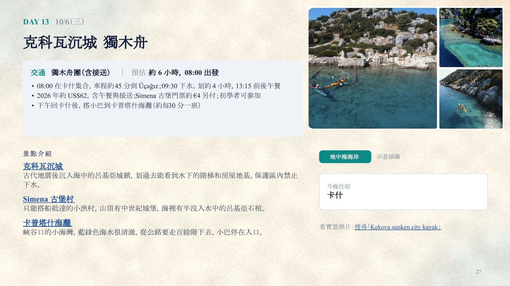
閱讀文字與參考連結
DAY 13 10/6（三）
克科瓦沉城 獨木舟
交通 獨木舟團（含接送） ｜ 預估 約 6 小時，08:00 出發
08:00 在卡什集合，車程約 45 分到 Üçağız；09:30 下水，划約 4 小時，13:15 前後午餐
2026 年約 US$62，含午餐與接送；Simena 古堡門票約 €4 另付；初學者可參加
下午回卡什後，搭小巴到卡普塔什海灘（約每 30 分一班）
景點介紹
克科瓦沉城
古代地震後沉入海中的呂基亞城鎮，划過去能看到水下的階梯和房屋地基。保護區內禁止下水。
Simena 古堡村
只能搭船抵達的小漁村，山頂有中世紀城堡，海裡有半沒入水中的呂基亞石棺。
卡普塔什海灘
峽谷口的小海灣，藍綠色海水很清澈。從公路要走百餘階下去，小巴停在入口。
地中海海岸
示意插圖
今晚住宿
卡什
看實景照片：搜尋「Kekova sunken city kayak」
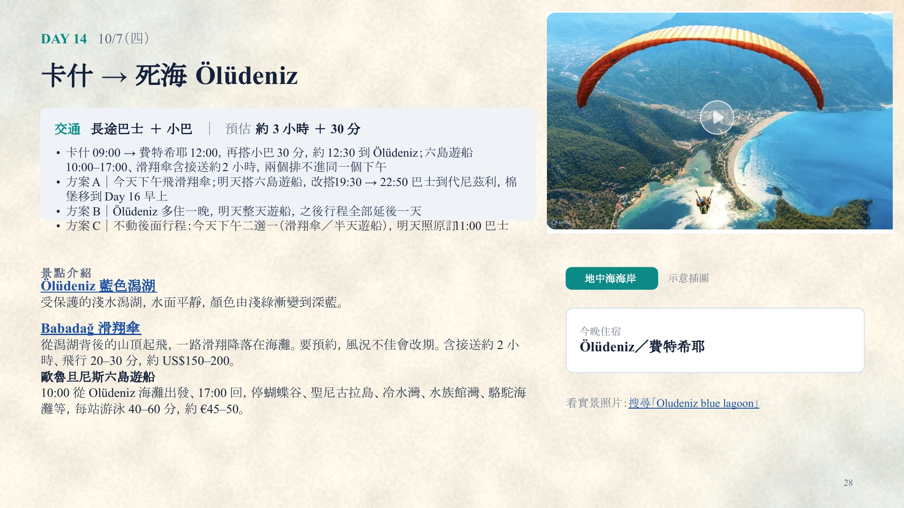
閱讀文字與參考連結
DAY 14 10/7（四）
卡什 → 死海 Ölüdeniz
交通 長途巴士 ＋ 小巴 ｜ 預估 約 3 小時 ＋ 30 分
卡什 09:00 → 費特希耶 12:00，再搭小巴 30 分，約 12:30 到 Ölüdeniz；六島遊船 10:00–17:00、滑翔傘含接送約 2 小時，兩個排不進同一個下午
方案 A｜今天下午飛滑翔傘；明天搭六島遊船，改搭 19:30 → 22:50 巴士到代尼茲利，棉堡移到 Day 16 早上
方案 B｜Ölüdeniz 多住一晚，明天整天遊船，之後行程全部延後一天
方案 C｜不動後面行程：今天下午二選一（滑翔傘／半天遊船），明天照原訂 11:00 巴士
景點介紹
Ölüdeniz 藍色潟湖
受保護的淺水潟湖，水面平靜，顏色由淺綠漸變到深藍。
Babadağ 滑翔傘
從潟湖背後的山頂起飛，一路滑翔降落在海灘。要預約，風況不佳會改期。含接送約 2 小時、飛行 20–30 分，約 US$150–200。
歐魯旦尼斯六島遊船
10:00 從 Olüdeniz 海灘出發、17:00 回，停蝴蝶谷、聖尼古拉島、冷水灣、水族館灣、駱駝海灘等，每站游泳 40–60 分，約 €45–50。
地中海海岸
示意插圖
今晚住宿
Ölüdeniz／費特希耶
看實景照片：搜尋「Oludeniz blue lagoon」
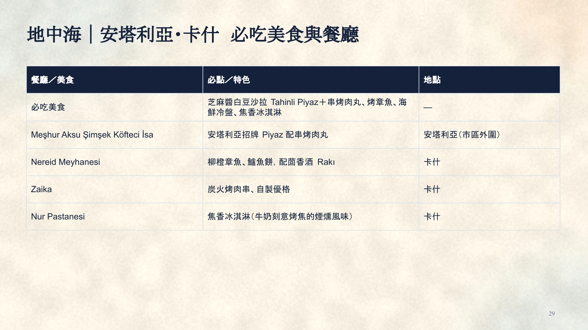
閱讀文字與參考連結
餐廳／美食
必點／特色
地點
必吃美食
芝麻醬白豆沙拉 Tahinli Piyaz＋串烤肉丸、烤章魚、海鮮冷盤、焦香冰淇淋
—
Meşhur Aksu Şimşek Köfteci İsa
安塔利亞招牌 Piyaz 配串烤肉丸
安塔利亞（市區外圍）
Nereid Meyhanesi
柳橙章魚、鱸魚餅，配茴香酒 Rakı
卡什
Zaika
炭火烤肉串、自製優格
卡什
Nur Pastanesi
焦香冰淇淋（牛奶刻意烤焦的煙燻風味）
卡什
地中海｜安塔利亞・卡什 必吃美食與餐廳
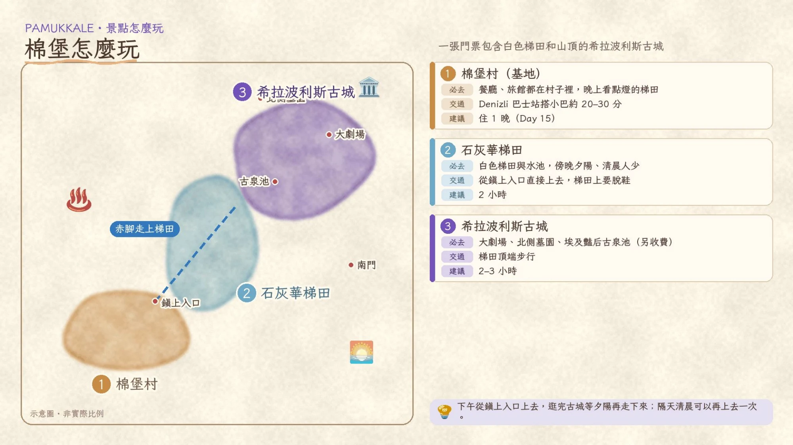
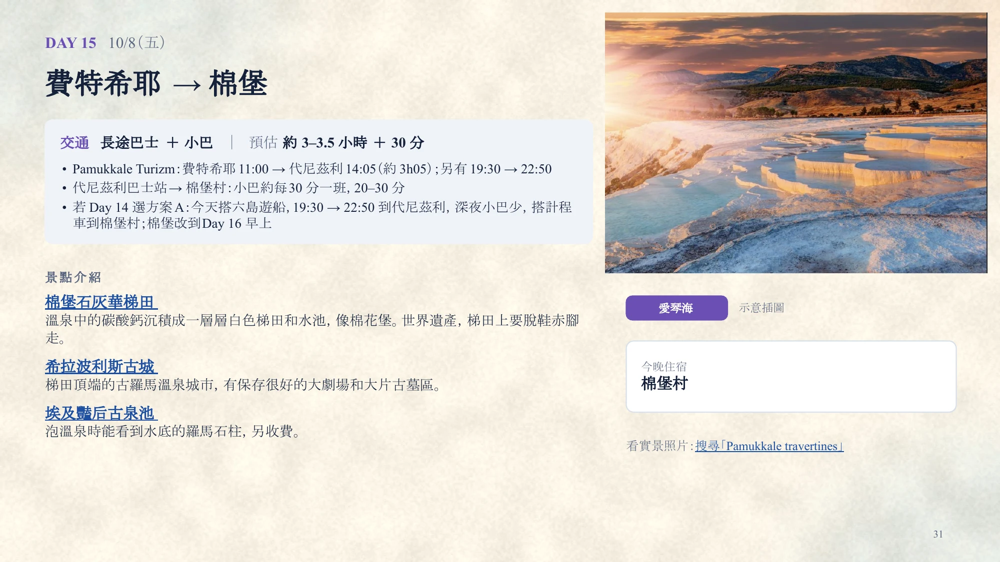
閱讀文字與參考連結
DAY 15 10/8（五）
費特希耶 → 棉堡
交通 長途巴士 ＋ 小巴 ｜ 預估 約 3–3.5 小時 ＋ 30 分
Pamukkale Turizm：費特希耶 11:00 → 代尼茲利 14:05（約 3h05）；另有 19:30 → 22:50
代尼茲利巴士站 → 棉堡村：小巴約每 30 分一班，20–30 分
若 Day 14 選方案 A：今天搭六島遊船，19:30 → 22:50 到代尼茲利，深夜小巴少，搭計程車到棉堡村；棉堡改到 Day 16 早上
景點介紹
棉堡石灰華梯田
溫泉中的碳酸鈣沉積成一層層白色梯田和水池，像棉花堡。世界遺產，梯田上要脫鞋赤腳走。
希拉波利斯古城
梯田頂端的古羅馬溫泉城市，有保存很好的大劇場和大片古墓區。
埃及豔后古泉池
泡溫泉時能看到水底的羅馬石柱，另收費。
愛琴海
示意插圖
今晚住宿
棉堡村
看實景照片：搜尋「Pamukkale travertines」
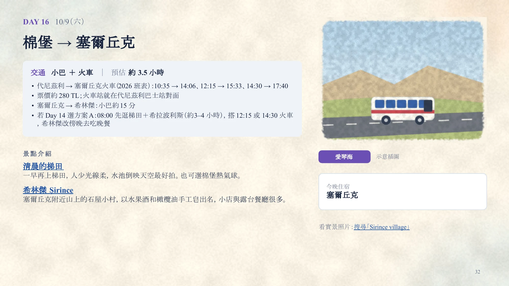
閱讀文字與參考連結
DAY 16 10/9（六）
棉堡 → 塞爾丘克
交通 小巴 ＋ 火車 ｜ 預估 約 3.5 小時
代尼茲利 → 塞爾丘克火車（2026 班表）：10:35 → 14:06、12:15 → 15:33、14:30 → 17:40
票價約 280 TL；火車站就在代尼茲利巴士站對面
塞爾丘克 → 希林傑：小巴約 15 分
若 Day 14 選方案 A：08:00 先逛梯田＋希拉波利斯（約 3–4 小時），搭 12:15 或 14:30 火車，希林傑改傍晚去吃晚餐
景點介紹
清晨的梯田
一早再上梯田，人少光線柔，水池倒映天空最好拍。也可選棉堡熱氣球。
希林傑 Şirince
塞爾丘克附近山上的石屋小村，以水果酒和橄欖油手工皂出名，小店與露台餐廳很多。
愛琴海
示意插圖
今晚住宿
塞爾丘克
看實景照片：搜尋「Sirince village」
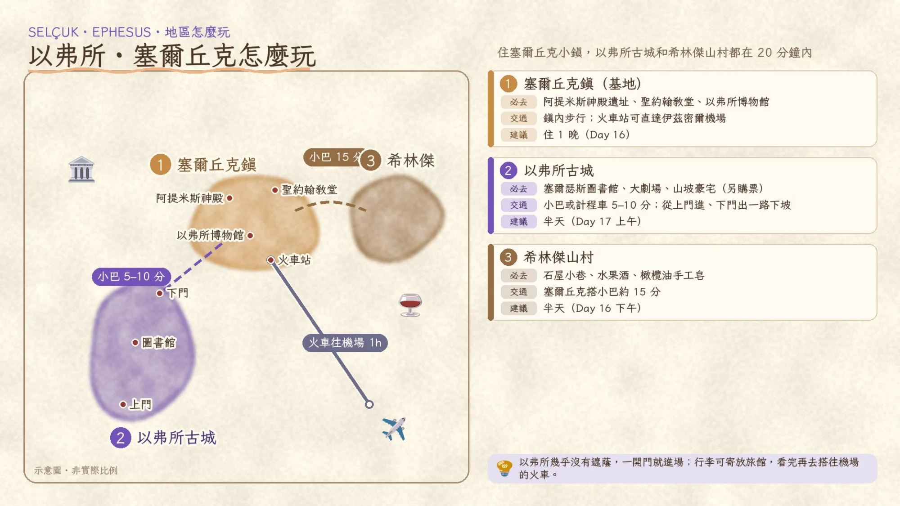
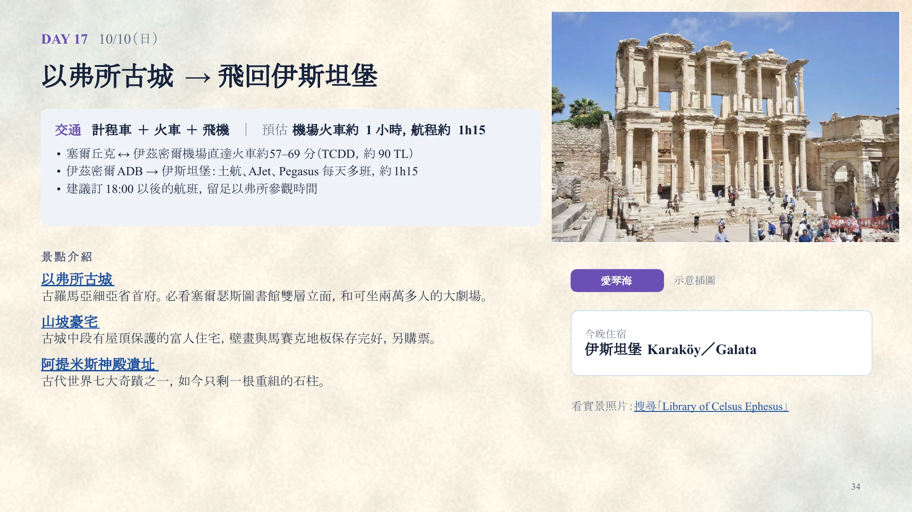
閱讀文字與參考連結
DAY 17 10/10（日）
以弗所古城 → 飛回伊斯坦堡
交通 計程車 ＋ 火車 ＋ 飛機 ｜ 預估 機場火車約 1 小時，航程約 1h15
塞爾丘克 ↔ 伊茲密爾機場直達火車約 57–69 分（TCDD，約 90 TL）
伊茲密爾 ADB → 伊斯坦堡：土航、AJet、Pegasus 每天多班，約 1h15
建議訂 18:00 以後的航班，留足以弗所參觀時間
景點介紹
以弗所古城
古羅馬亞細亞省首府。必看塞爾瑟斯圖書館雙層立面，和可坐兩萬多人的大劇場。
山坡豪宅
古城中段有屋頂保護的富人住宅，壁畫與馬賽克地板保存完好，另購票。
阿提米斯神殿遺址
古代世界七大奇蹟之一，如今只剩一根重組的石柱。
愛琴海
示意插圖
今晚住宿
伊斯坦堡 Karaköy／Galata
看實景照片：搜尋「Library of Celsus Ephesus」
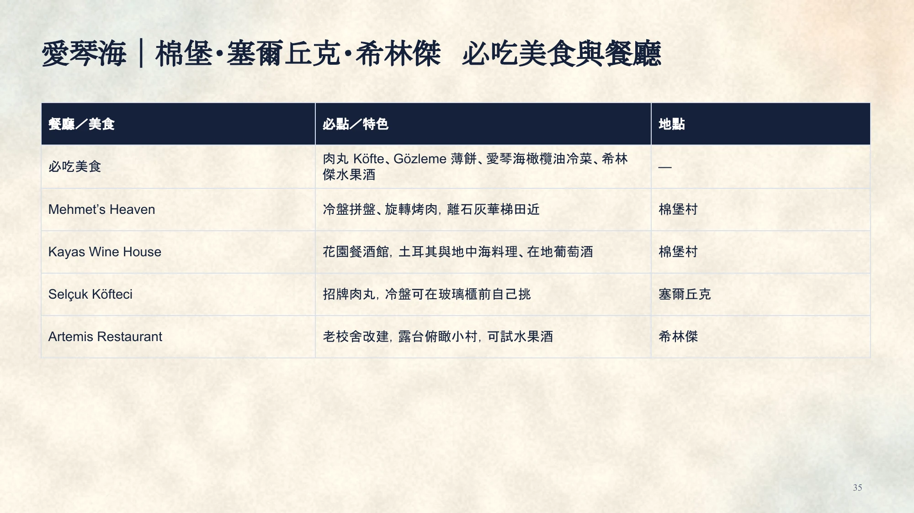
閱讀文字與參考連結
餐廳／美食
必點／特色
地點
必吃美食
肉丸 Köfte、Gözleme 薄餅、愛琴海橄欖油冷菜、希林傑水果酒
—
Mehmet’s Heaven
冷盤拼盤、旋轉烤肉，離石灰華梯田近
棉堡村
Kayas Wine House
花園餐酒館，土耳其與地中海料理、在地葡萄酒
棉堡村
Selçuk Köfteci
招牌肉丸，冷盤可在玻璃櫃前自己挑
塞爾丘克
Artemis Restaurant
老校舍改建，露台俯瞰小村，可試水果酒
希林傑
愛琴海｜棉堡・塞爾丘克・希林傑 必吃美食與餐廳
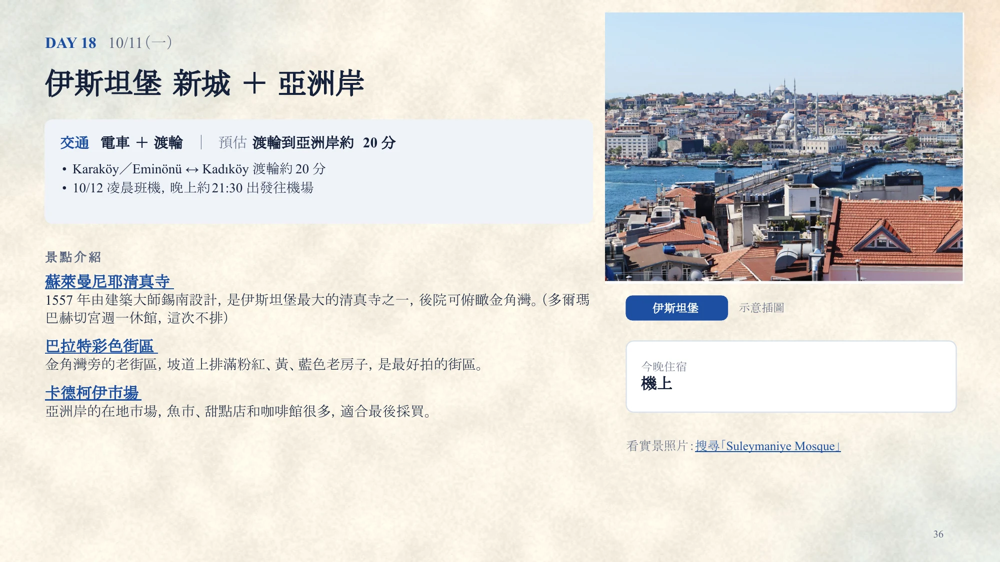
閱讀文字與參考連結
DAY 18 10/11（一）
伊斯坦堡 新城 ＋ 亞洲岸
交通 電車 ＋ 渡輪 ｜ 預估 渡輪到亞洲岸約 20 分
Karaköy／Eminönü ↔ Kadıköy 渡輪約 20 分
10/12 凌晨班機，晚上約 21:30 出發往機場
景點介紹
蘇萊曼尼耶清真寺
1557 年由建築大師錫南設計，是伊斯坦堡最大的清真寺之一，後院可俯瞰金角灣。（多爾瑪巴赫切宮週一休館，這次不排）
巴拉特彩色街區
金角灣旁的老街區，坡道上排滿粉紅、黃、藍色老房子，是最好拍的街區。
卡德柯伊市場
亞洲岸的在地市場，魚市、甜點店和咖啡館很多，適合最後採買。
伊斯坦堡
示意插圖
今晚住宿
機上
看實景照片：搜尋「Suleymaniye Mosque」
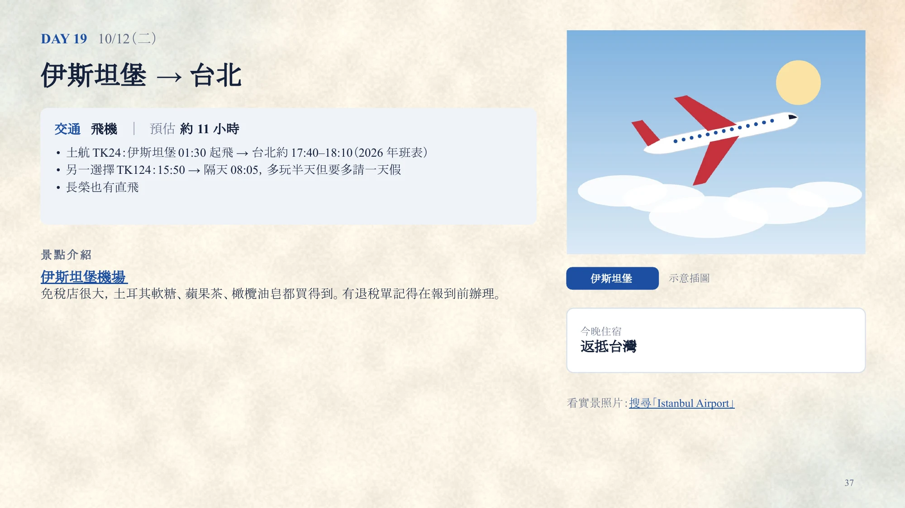
閱讀文字與參考連結
DAY 19 10/12（二）
伊斯坦堡 → 台北
交通 飛機 ｜ 預估 約 11 小時
土航 TK24：伊斯坦堡 01:30 起飛 → 台北約 17:40–18:10（2026 年班表）
另一選擇 TK124：15:50 → 隔天 08:05，多玩半天但要多請一天假
長榮也有直飛
景點介紹
伊斯坦堡機場
免稅店很大，土耳其軟糖、蘋果茶、橄欖油皂都買得到。有退稅單記得在報到前辦理。
伊斯坦堡
示意插圖
今晚住宿
返抵台灣
看實景照片：搜尋「Istanbul Airport」
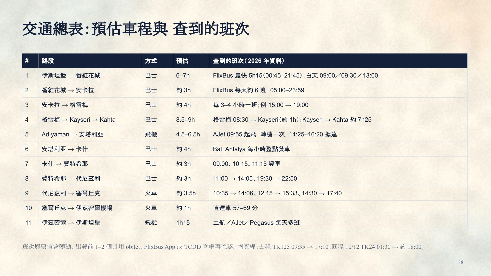
閱讀文字與參考連結
交通總表：預估車程與查到的班次
#
路段
方式
預估
查到的班次（2026 年資料）
1
伊斯坦堡 → 番紅花城
巴士
6–7h
FlixBus 最快 5h15（00:45–21:45）；白天 09:00／09:30／13:00
2
番紅花城 → 安卡拉
巴士
約 3h
FlixBus 每天約 6 班，05:00–23:59
3
安卡拉 → 格雷梅
巴士
約 4h
每 3–4 小時一班；例 15:00 → 19:00
4
格雷梅 → Kayseri → Kahta
巴士
8.5–9h
格雷梅 08:30 → Kayseri（約 1h）；Kayseri → Kahta 約 7h25
5
Adıyaman → 安塔利亞
飛機
4.5–6.5h
AJet 09:55 起飛，轉機一次，14:25–16:20 抵達
6
安塔利亞 → 卡什
巴士
約 4h
Batı Antalya 每小時整點發車
7
卡什 → 費特希耶
巴士
約 3h
09:00、10:15、11:15 發車
8
費特希耶 → 代尼茲利
巴士
約 3h
11:00 → 14:05、19:30 → 22:50
9
代尼茲利 → 塞爾丘克
火車
約 3.5h
10:35 → 14:06、12:15 → 15:33、14:30 → 17:40
10
塞爾丘克 → 伊茲密爾機場
火車
約 1h
直達車 57–69 分
11
伊茲密爾 → 伊斯坦堡
飛機
1h15
土航／AJet／Pegasus 每天多班
班次與票價會變動，出發前 1–2 個月用 obilet、FlixBus App 或 TCDD 官網再確認。國際線：去程 TK125 09:35 → 17:10；回程 10/12 TK24 01:30 → 約 18:00。
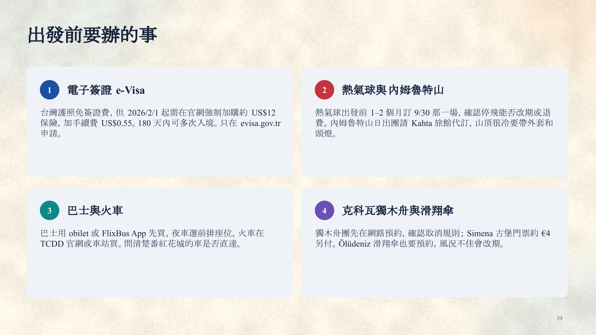
閱讀文字與參考連結
出發前要辦的事
1
電子簽證 e-Visa
台灣護照免簽證費，但 2026/2/1 起需在官網強制加購約 US$12 保險，加手續費 US$0.55。180 天內可多次入境。只在 evisa.gov.tr 申請。
2
熱氣球與內姆魯特山
熱氣球出發前 1–2 個月訂 9/30 那一場，確認停飛能否改期或退費。內姆魯特山日出團請 Kahta 旅館代訂，山頂很冷要帶外套和頭燈。
3
巴士與火車
巴士用 obilet 或 FlixBus App 先買，夜車選前排座位。火車在 TCDD 官網或車站買。問清楚番紅花城的車是否直達。
4
克科瓦獨木舟與滑翔傘
獨木舟團先在網路預約，確認取消規則；Simena 古堡門票約 €4 另付。Ölüdeniz 滑翔傘也要預約，風況不佳會改期。
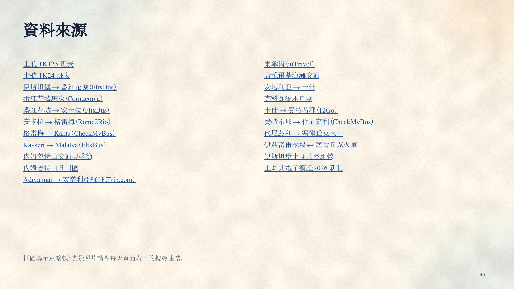
閱讀文字與參考連結
資料來源
土航 TK125 班表
土航 TK24 班表
伊斯坦堡 → 番紅花城（FlixBus）
番紅花城班次（Cornucopia）
番紅花城 → 安卡拉（FlixBus）
安卡拉 → 格雷梅（Rome2Rio）
格雷梅 → Kahta（CheckMyBus）
Kayseri → Malatya（FlixBus）
內姆魯特山交通與季節
內姆魯特山日出團
Adıyaman → 安塔利亞航班（Trip.com）
雨傘街（inTravel）
康雅爾蒂海灘交通
安塔利亞 → 卡什
克科瓦獨木舟團
卡什 → 費特希耶（12Go）
費特希耶 → 代尼茲利（CheckMyBus）
代尼茲利 → 塞爾丘克火車
伊茲密爾機場 ↔ 塞爾丘克火車
伊斯坦堡土耳其浴比較
土耳其電子簽證 2026 新制
插圖為示意繪製；實景照片請點每天頁面右下的搜尋連結。
- 土航 TK125 班表
- 土航 TK24 班表
- 伊斯坦堡 → 番紅花城（FlixBus）
- 番紅花城班次（Cornucopia）
- 番紅花城 → 安卡拉（FlixBus）
- 安卡拉 → 格雷梅（Rome2Rio）
- 格雷梅 → Kahta（CheckMyBus）
- Kayseri → Malatya（FlixBus）
- 內姆魯特山交通與季節
- 內姆魯特山日出團
- Adıyaman → 安塔利亞航班（Trip.com）
- 雨傘街（inTravel）
- 康雅爾蒂海灘交通
- 安塔利亞 → 卡什
- 克科瓦獨木舟團
- 卡什 → 費特希耶（12Go）
- 費特希耶 → 代尼茲利（CheckMyBus）
- 代尼茲利 → 塞爾丘克火車
- 伊茲密爾機場 ↔ 塞爾丘克火車
- 伊斯坦堡土耳其浴比較
- 土耳其電子簽證 2026 新制
找不到符合的頁面，請換個關鍵字。